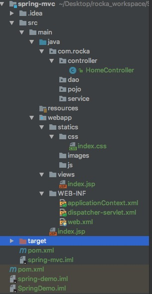

Spring之初识Spring MVC
准备学习以及总结Spring的常规用法，大致看了看，感觉没啥难度。Back in Black!

Spring 框架就像一个家族，有众多衍生产品例如 boot、security、jpa等等。但他们的基础都是Spring 的 IOC和AOP ioc 提供了依赖注入的容器 aop ，解决了面向横切面的编程，然后在此两者的基础上实现了其他延伸产品的高级功能。
MVC
Spring(Model-View-Controller)是基于 Servlet 的一个 MVC 框架
- Model(模型层，业务数据的信息表示，关注支撑业务的信息构成，通常是多个实体业务的组合)
- View(视图层，为用户提供数据的呈现)
- Controller(调用业务逻辑产生合适的Model)传递数据给视图层用于呈现

总结：其实Controller就是负责业务数据的抽取，View template就负责页面的呈现，Front-controller负责分发调度
MVC架构的本质是：
程序分层，分工合作，独立协同工作；MVC的核心思想是业务数据的抽取同业务逻辑相分离。
Spring Mvc 和Spring Boot的区别
Spring Boot实现了自动配置，降低了项目搭建的复杂度。Spring框架需要进行大量的配置，Spring Boot引入自动配置的概念，让项目设置变得很容易。Spring Boot本身并不提供Spring框架的核心特性以及扩展功能，只是用于快速、敏捷地开发新一代基于Spring框架的应用程序。也就是说，它并不是用来替代Spring的解决方案，而是和Spring框架紧密结合用于提升Spring开发者体验的工具。同时它集成了大量常用的第三方库配置(例如Jackson, JDBC, Mongo, Redis, Mail等等)，Spring Boot应用中这些第三方库几乎可以零配置的开箱即用(out-of-the-box)，大部分的Spring Boot应用都只需要非常少量的配置代码，让你能专注业务逻辑。
对使用者来说，换用Spring Boot以后，不需要单独安装Tomcat这类容器服务器了，maven打出jar包直接跑起来就是个网站，但你最核心的业务逻辑实现与业务流程实现没有任何变化。
总的来说:
Spring 是一个“引擎”；
Spring MVC 是基于Spring的一个 MVC 框架 ；
Spring Boot 是基于Spring4的条件注册的一套快速开发整合包。
Spring MVC 流程架构图

DispatcherServlet : DispatcherServlet就是一个前端控制器，浏览器的请求通过DispatcherServlet分发，到达合适的Controller来生成所需要的业务数据Model，Model再通过DispatcherServlet传递给View，进行页面的渲染。
HandlerAdapter : 采用适配器模式，将各种不同类型的Handler适配成DispatcherServlet 可以使用的类，DispatcherServlet内部使用的一个类。其实就是Controller的一个表现形式，
HandlerInterceptor : 在需要被拦截的两侧加入一些措施，是一个接口，在调用Controller之前，调用之后，以及model发送到view做一些操作
HandlerMapping : 帮助DispatcherServlet 请求到来之后，哪一个Controller来处理这个请求
HandlerExecutionChain : HandlerMapping返回的东西有HandlerInterceptor和HandlerAdapter，他们之间构成一个执行链条。
preHandle -> ControllerMethod -> postHandle -> afterCompletion
用到了java的反射机制实现的
ModelAndView：当控制器处理完请求时，通常会将包含视图名称或视图对象以及一些模型属性的ModelAndView对象返回到DispatcherServlet。
因此，经常需要在控制器中构造ModelAndView对象，当然也可以用Map和Model的数据形式，但是最后都会转换为ModelAndView。是MVC层，Model的具体表现。ViewResolver： 视图解析器，帮助DispatcherServlet来解决什么页面该正确的渲染。
CONFIG MVC
新建一个完整的Spring MVC Web 项目大概的目录框架是这样的。

首先看看maven 导包的配置文件pom.xml:
1
2
3
4
5
6
7
8
9
10
11
12
13
14
15
16
17
18
19
20
21
22
23
24
25
26
27
28
29
30
31
32
33
34
35
36
37
38
39
40
41
42
43
44
45
46
47
48
49
50
51
52
53
54
55
56
57
58
59
60
61
62
63
64
65
66
67
68
69
70
71
72
73
74
75
76
77
78
79
80
81
82
83
84
85
86
87
88
89
90
91
92
93
94
95
96
97
98
99
100
101
102
103
104
105
106
107
108
109
110
111
112
113
114
115
116
117
118
119
120
121
122
123
124
125
126
127
128
129
130
131
132
133
134
135
136
137
138
139
140<?xml version="1.0" encoding="UTF-8"?>
<project xmlns="http://maven.apache.org/POM/4.0.0" xmlns:xsi="http://www.w3.org/2001/XMLSchema-instance"
xsi:schemaLocation="http://maven.apache.org/POM/4.0.0 http://maven.apache.org/xsd/maven-4.0.0.xsd">
<parent>
<artifactId>spring-demo</artifactId>
<groupId>com.rocka</groupId>
<version>1.0-SNAPSHOT</version>
</parent>
<modelVersion>4.0.0</modelVersion>
<artifactId>spring-mvc</artifactId>
<packaging>war</packaging>
<name>spring-mvc Maven Webapp</name>
<!-- FIXME change it to the project's website -->
<url>http://www.example.com</url>
<properties>
<project.build.sourceEncoding>UTF-8</project.build.sourceEncoding>
<maven.compiler.source>1.7</maven.compiler.source>
<maven.compiler.target>1.7</maven.compiler.target>
</properties>
<dependencies>
<dependency>
<groupId>junit</groupId>
<artifactId>junit</artifactId>
<version>4.11</version>
<scope>test</scope>
</dependency>
<!--日志-->
<dependency>
<groupId>org.slf4j</groupId>
<artifactId>slf4j-log4j12</artifactId>
<version>1.7.10</version>
</dependency>
<!--J2EE-->
<dependency>
<groupId>javax.servlet</groupId>
<artifactId>javax.servlet-api</artifactId>
<version>3.1.0</version>
</dependency>
<dependency>
<groupId>javax.servlet.jsp</groupId>
<artifactId>jsp-api</artifactId>
<version>2.2</version>
</dependency>
<dependency>
<groupId>javax.servlet</groupId>
<artifactId>jstl</artifactId>
<version>1.2</version>
</dependency>
<!--mysql驱动包-->
<dependency>
<groupId>mysql</groupId>
<artifactId>mysql-connector-java</artifactId>
<version>5.1.35</version>
</dependency>
<!--spring框架层需要用到的包-->
<dependency>
<groupId>org.springframework</groupId>
<artifactId>spring-web</artifactId>
<version>4.2.6.RELEASE</version>
</dependency>
<dependency>
<groupId>org.springframework</groupId>
<artifactId>spring-webmvc</artifactId>
<version>4.2.6.RELEASE</version>
</dependency>
<dependency>
<groupId>org.springframework</groupId>
<artifactId>spring-context</artifactId>
<version>4.2.6.RELEASE</version>
</dependency>
<dependency>
<groupId>org.springframework</groupId>
<artifactId>spring-test</artifactId>
<version>4.2.6.RELEASE</version>
</dependency>
<dependency>
<groupId>org.springframework</groupId>
<artifactId>spring-jdbc</artifactId>
<version>4.2.6.RELEASE</version>
</dependency>
<!-- 面向切面编程需要用到的包 -->
<dependency>
<groupId>org.aspectj</groupId>
<artifactId>aspectjweaver</artifactId>
<version>1.8.9</version>
</dependency>
<!--其他需要的包-->
<dependency>
<groupId>org.apache.commons</groupId>
<artifactId>commons-lang3</artifactId>
<version>3.4</version>
</dependency>
<dependency>
<groupId>commons-fileupload</groupId>
<artifactId>commons-fileupload</artifactId>
<version>1.3.1</version>
</dependency>
</dependencies>
<build>
<finalName>spring-mvc</finalName>
<pluginManagement><!-- lock down plugins versions to avoid using Maven defaults (may be moved to parent pom) -->
<plugins>
<plugin>
<artifactId>maven-clean-plugin</artifactId>
<version>3.0.0</version>
</plugin>
<!-- see http://maven.apache.org/ref/current/maven-core/default-bindings.html#Plugin_bindings_for_war_packaging -->
<plugin>
<artifactId>maven-resources-plugin</artifactId>
<version>3.0.2</version>
</plugin>
<plugin>
<artifactId>maven-compiler-plugin</artifactId>
<version>3.7.0</version>
</plugin>
<plugin>
<artifactId>maven-surefire-plugin</artifactId>
<version>2.20.1</version>
</plugin>
<plugin>
<artifactId>maven-war-plugin</artifactId>
<version>3.2.0</version>
</plugin>
<plugin>
<artifactId>maven-install-plugin</artifactId>
<version>2.5.2</version>
</plugin>
<plugin>
<artifactId>maven-deploy-plugin</artifactId>
<version>2.8.2</version>
</plugin>
</plugins>
</pluginManagement>
</build>
</project>配置spring-mvc的各项配置文件，自动生成的版本比较低，可以参考下面高版本的配置文件
1
2
3
4
5
6
7
8
9
10
11
12
13
14
15
16
17
18
19
20
21
22
23
24
25
26
27
28
29
30
31
32
33
34
35
36
37
38<?xml version="1.0" encoding="UTF-8"?>
<web-app xmlns="http://xmlns.jcp.org/xml/ns/javaee"
xmlns:xsi="http://www.w3.org/2001/XMLSchema-instance"
xsi:schemaLocation="http://xmlns.jcp.org/xml/ns/javaee http://xmlns.jcp.org/xml/ns/javaee/web-app_3_1.xsd"
version="3.1">
<display-name>Archetype Created Web Application</display-name>
<!--welcome pages-->
<welcome-file-list>
<welcome-file>index.jsp</welcome-file>
</welcome-file-list>
<!--配置springmvc DispatcherServlet-->
<servlet>
<servlet-name>springMVC</servlet-name>
<servlet-class>org.springframework.web.servlet.DispatcherServlet</servlet-class>
<init-param>
<!--配置dispatcher.xml作为mvc的配置文件-->
<param-name>contextConfigLocation</param-name>
<param-value>/WEB-INF/dispatcher-servlet.xml</param-value>
</init-param>
<load-on-startup>1</load-on-startup>
<async-supported>true</async-supported>
</servlet>
<servlet-mapping>
<servlet-name>springMVC</servlet-name>
<url-pattern>/</url-pattern>
</servlet-mapping>
<!--把applicationContext.xml加入到配置文件中-->
<context-param>
<param-name>contextConfigLocation</param-name>
<param-value>/WEB-INF/applicationContext.xml</param-value>
</context-param>
<listener>
<listener-class>org.springframework.web.context.ContextLoaderListener</listener-class>
</listener>
</web-app>配置dispatcher-servlet.xml
1
2
3
4
5
6
7
8
9
10
11
12
13
14
15
16
17
18
19
20
21
22
23
24
25
26
27
28
29
30
31
32
33<?xml version="1.0" encoding="UTF-8"?>
<beans xmlns="http://www.springframework.org/schema/beans"
xmlns:xsi="http://www.w3.org/2001/XMLSchema-instance"
xmlns:context="http://www.springframework.org/schema/context"
xmlns:mvc="http://www.springframework.org/schema/mvc"
xsi:schemaLocation="http://www.springframework.org/schema/beans http://www.springframework.org/schema/beans/spring-beans.xsd http://www.springframework.org/schema/context http://www.springframework.org/schema/context/spring-context.xsd http://www.springframework.org/schema/mvc http://www.springframework.org/schema/mvc/spring-mvc.xsd">
<!--此文件负责整个mvc中的配置-->
<!--启用spring的一些annotation -->
<context:annotation-config/>
<!-- 配置注解驱动 可以将request参数与绑定到controller参数上 -->
<mvc:annotation-driven/>
<!--静态资源映射-->
<!--本项目把静态资源放在了webapp的statics目录下，资源映射如下-->
<mvc:resources mapping="/css/**" location="/statics/css/"/>
<mvc:resources mapping="/js/**" location="/statics/js/"/>
<mvc:resources mapping="/image/**" location="/statics/images/"/>
<mvc:default-servlet-handler /> <!--这句要加上，要不然可能会访问不到静态资源，具体作用自行百度-->
<!-- 对模型视图名称的解析，即在模型视图名称添加前后缀(如果最后一个还是表示文件夹,则最后的斜杠不要漏了) 使用JSP-->
<!-- 默认的视图解析器 在上边的解析错误时使用 (默认使用html)- -->
<bean id="defaultViewResolver" class="org.springframework.web.servlet.view.InternalResourceViewResolver">
<property name="viewClass" value="org.springframework.web.servlet.view.JstlView"/>
<property name="prefix" value="/views/"/><!--设置JSP文件的目录位置-->
<property name="suffix" value=".jsp"/>
<property name="exposeContextBeansAsAttributes" value="true"/>
</bean>
<!-- 自动扫描装配 -->
<context:component-scan base-package="com.rocka.controller"/>
</beans>
配置applicationContext.xml，负责一些非MVC组件的配置，暂时没有，可以是空的
1
2
3
4
5
6
7
8<?xml version="1.0" encoding="UTF-8"?>
<beans xmlns="http://www.springframework.org/schema/beans"
xmlns:xsi="http://www.w3.org/2001/XMLSchema-instance"
xmlns:context="http://www.springframework.org/schema/context"
xsi:schemaLocation="http://www.springframework.org/schema/beans http://www.springframework.org/schema/beans/spring-beans.xsd
http://www.springframework.org/schema/context http://www.springframework.org/schema/context/spring-context.xsd">
<context:component-scan base-package="com.rocka"/>
</beans>
新建项目一般步骤
个人认为关键点在于使用intellij IDEA来进行Spring MVC项目的配置，其中不乏出现很多错误，这里备注以及标记下，配置常用到的关键点。当然如果是Spring BOOT构建项目就会简单许多。
- New -> Project -> Maven -> maven-archetype-webapp。注意是maven-archetype-webapp，不是cocoon-22-archetype-webapp。
- 可能新建的项目没有dispatcher-servlet.xml等文件，右键点击项目文件夹，选择Add framework support。点击Spring->Spring MVC。如果没有这个选项则，在Project Structure中 Facets它删除后，再进行添加。
- 文件夹必须Project Structure指定Sources，Resources等。
- 配置On ‘Update’ action 和 On frame deactivation两项都选择Update classes and resources，这是为了当我们修改了jsp、css、js等静态资源的时候，立即生效，不需要重启Tomcat，直接在页面上刷新就可以看到效果。
工程问题复查步骤
- 如果maven导包出现问题，记得右键pom.xml来进行Reimport。
- 还有问题再在intellij idea的右侧有Maven Projects的页签看是否有error。有error代表导入maven库失败。
- 在project Structrue中的dependencies看库是否真的导进去。没有导进去的话，Add + Library
其余提示
新建一个webapp，New->Module/Project->Maven->maven-archetype-webapp
web.xml配置文件默认使用2.3，不支持el。
1 | <!DOCTYPE web-app PUBLIC |
所以改为
1 | <?xml version="1.0" encoding="UTF-8"?> |